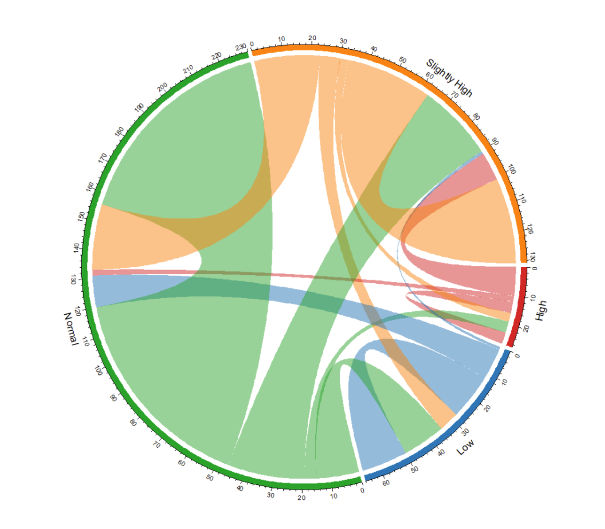
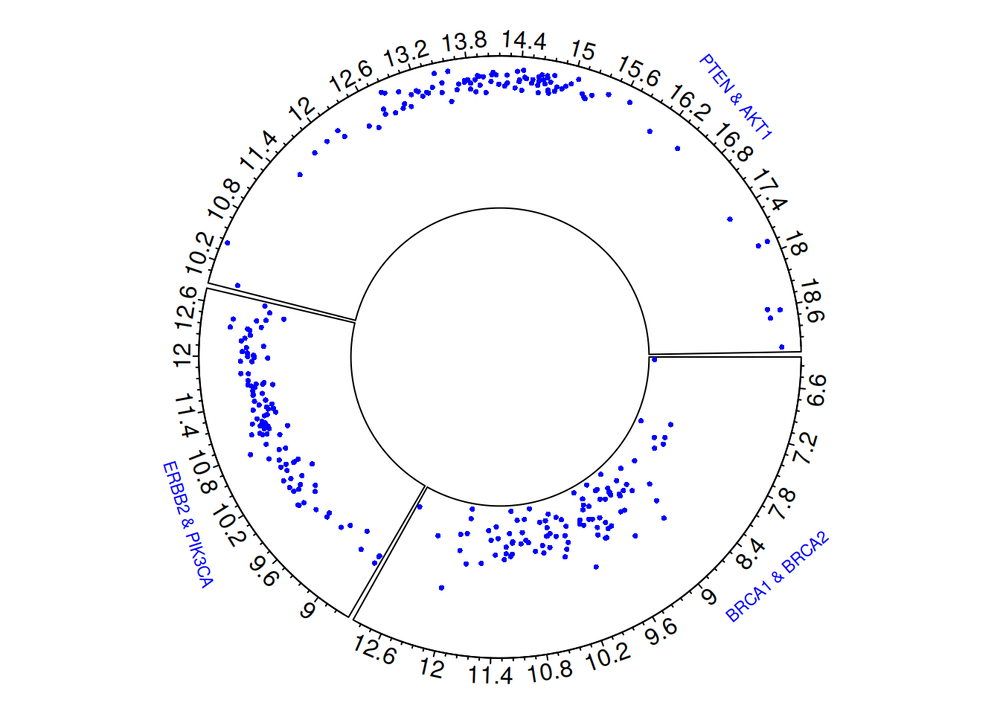
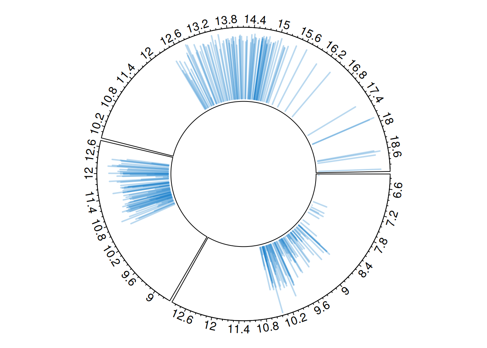
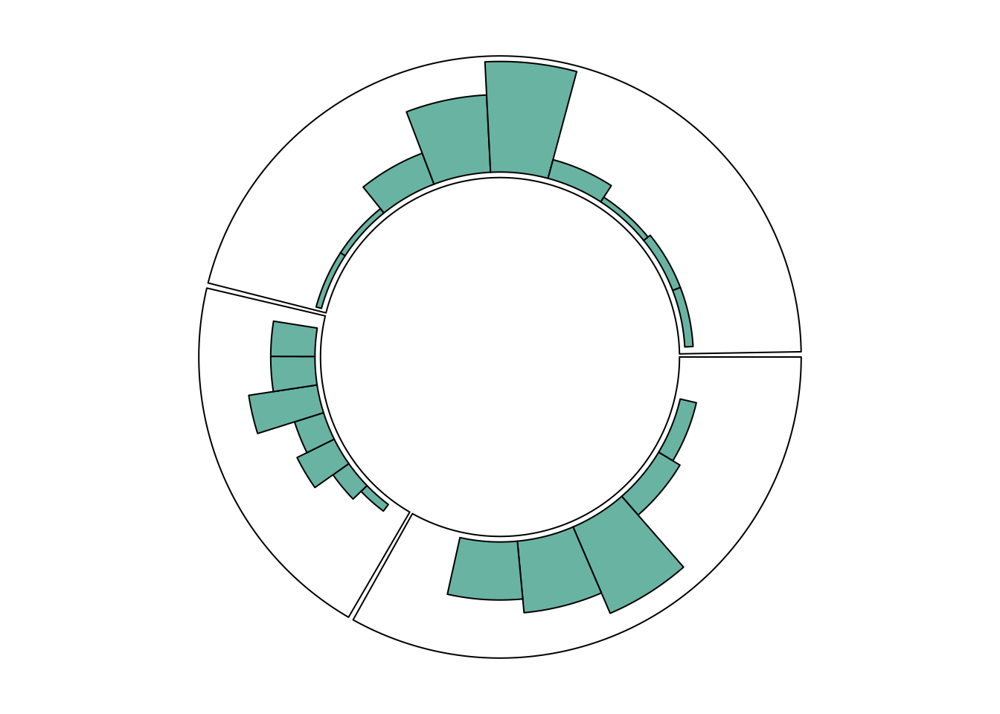
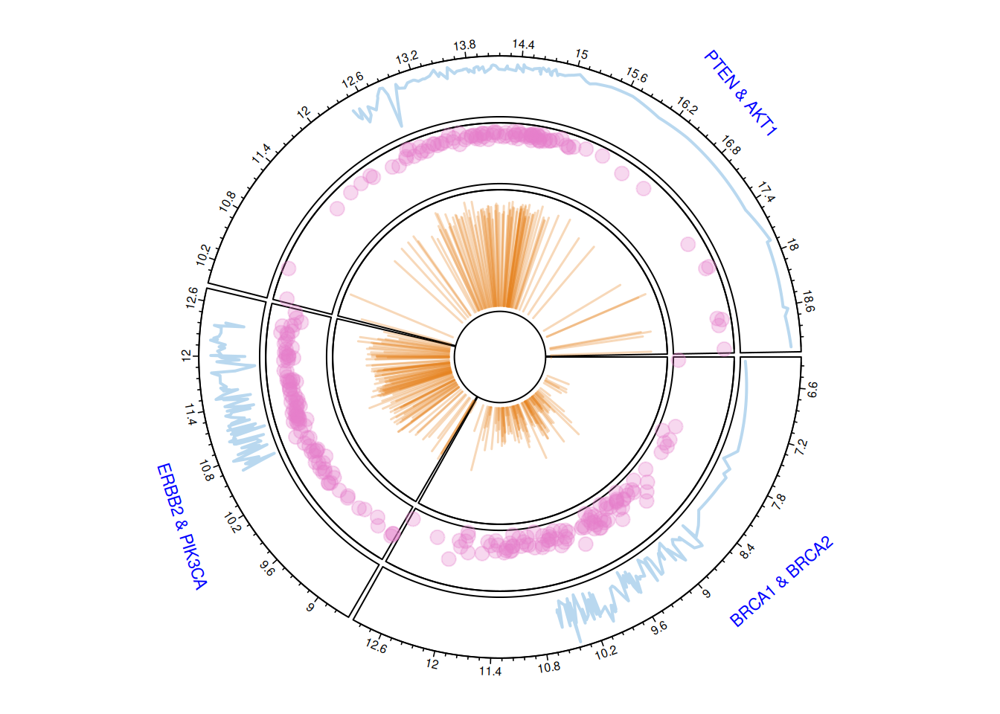
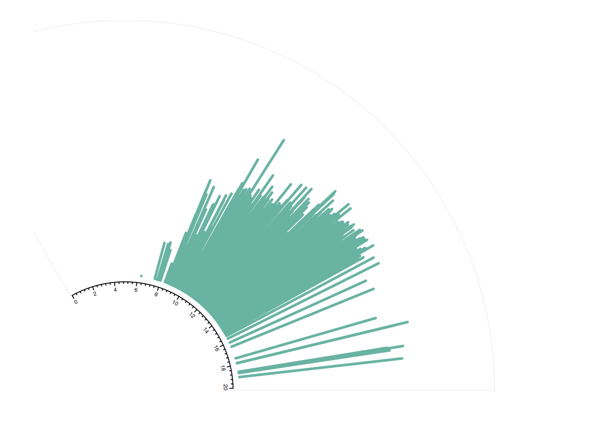
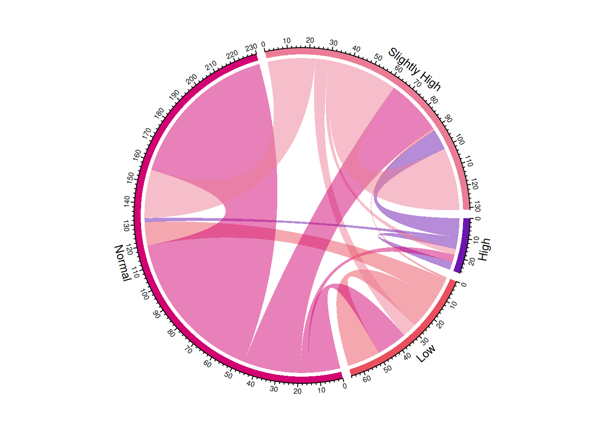
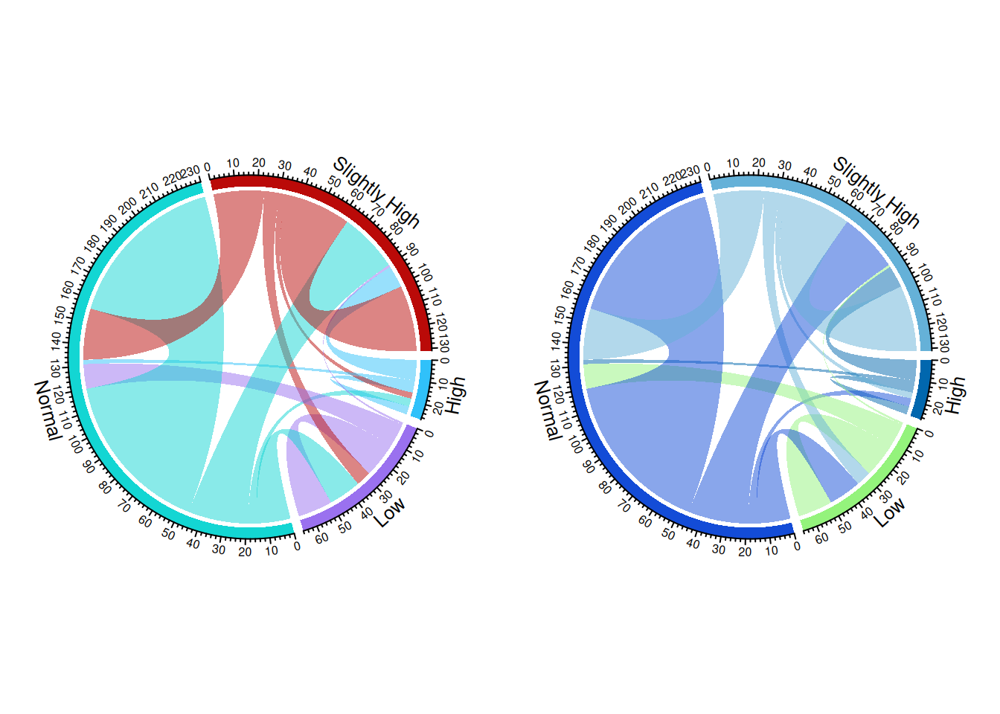
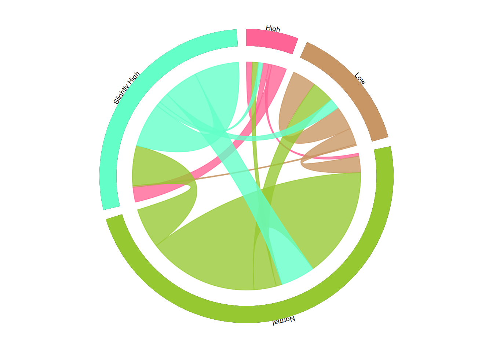
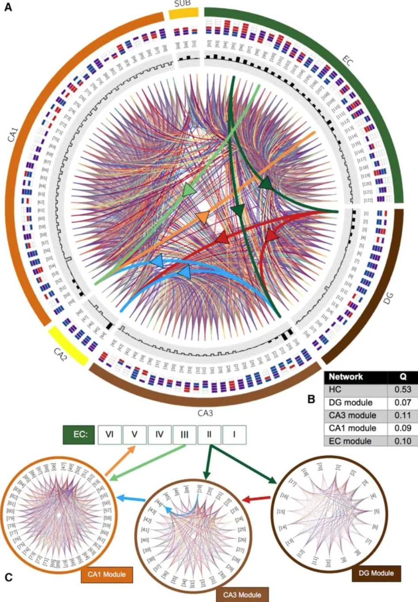

# 安装包
if (!requireNamespace("tidyverse", quietly = TRUE)) {
install.packages("tidyverse")
}
if (!requireNamespace("readr", quietly = TRUE)) {
install.packages("readr")
}
if (!requireNamespace("circlize", quietly = TRUE)) {
install.packages("circlize")
}
if (!requireNamespace("readxl", quietly = TRUE)) {
install.packages("readxl")
}
if (!requireNamespace("dplyr", quietly = TRUE)) {
install.packages("dplyr")
}
if (!requireNamespace("igraph", quietly = TRUE)) {
install.packages("igraph")
}
if (!requireNamespace("ggraph", quietly = TRUE)) {
install.packages("ggraph")
}
if (!requireNamespace("tidygraph", quietly = TRUE)) {
install.packages("tidygraph")
}
if (!requireNamespace("tidygraph", quietly = TRUE)) {
remotes::install_github("mattflor/chorddiag")
}
if (!requireNamespace("viridis", quietly = TRUE)) {
install.packages("viridis")
}
# 加载包
library(tidyverse)
library(readr)
library(circlize)
library(readxl)
library(dplyr)
library(igraph)
library(ggraph)
library(tidygraph)
library(chorddiag)
library(viridis)和弦图
和弦图可以用连接线或条带的方式展示不同对象之间的关系。和弦图的连接，可以直接显示不同对象之间存在关系，连接的宽度与关系的强度成正比，连接的颜色可以代表关系的另一种映射，如关系的类型。图中扇形的大小，代表对象的度量。
示例

此和弦图展示某药服用前后血糖等级的转变。每个弧表示一个血糖等级。弦的宽度表示转变的数量或频率。设置透明度，和弦的颜色半透明，以便更清晰地观察数据流向。
环境配置
系统要求： 跨平台（Linux/MacOS/Windows）
编程语言：R
依赖包：
tidyverse;readr;circlize;readxl;dplyr;igraph;ggraph;tidygraph;chorddiag;viridis
数据准备
使用UCSC Xena网站(UCSC Xena (xenabrowser.net))的TCGA-BRCA.star_counts.tsv和某医院中患者使用某药物后血糖的变化情况Berberine_new.xlsx。
# TCGA-BRCA.star_counts.tsv
tcga_brca_star_counts <- readr::read_tsv("https://bizard-1301043367.cos.ap-guangzhou.myqcloud.com/TCGA-BRCA.star_counts.tsv")
target_ensembl_ids <- c("ENSG00000012048.23", # BRCA1
"ENSG00000139618.16", # BRCA2
"ENSG00000141736.14", # ERBB2
"ENSG00000121879.6", # PIK3CA
"ENSG00000171862.11", # PTEN
"ENSG00000111537.5") # AKT1
gene_data <- tcga_brca_star_counts[tcga_brca_star_counts$Ensembl_ID %in% target_ensembl_ids, ]
gene_data <- gene_data[,2:101]
gene_data_t <- t(gene_data)
x <- c(gene_data_t[, 1], gene_data_t[, 3], gene_data_t[, 5])
y <- c(gene_data_t[, 2], gene_data_t[, 4], gene_data_t[, 6])
factor <- rep(c("a", "b", "c"), each = 100)
plot_data <- data.frame(x = x, y = y, factor = factor)
# Berberine_new
berberine_blood_glucose <- readr::read_csv("https://bizard-1301043367.cos.ap-guangzhou.myqcloud.com/Berberine_new.csv")
berberine_blood_glucose <- berberine_blood_glucose %>% na.omit()
blood_glucose_category <- function(value) {
if (value < 4.5) {
return("Low")
} else if (value >= 4.5 & value < 6.5) {
return("Normal")
} else if (value >= 6.5 & value <= 11.0) {
return("Slightly High")
} else {
return("High")
}
}
berberine_blood_glucose$before_category <- sapply(berberine_blood_glucose$before, blood_glucose_category)
berberine_blood_glucose$after_category <- sapply(berberine_blood_glucose$after, blood_glucose_category)
adj_matrix <- table(berberine_blood_glucose$before_category, berberine_blood_glucose$after_category) # 生成邻接矩阵
adj_matrix_df <- as.data.frame(as.table(adj_matrix))
adj_matrix_wide <- adj_matrix_df %>%
pivot_wider(names_from = Var2, values_from = Freq, values_fill = list(Freq = 0))
adj_matrix_wide_df <- as.data.frame(adj_matrix_wide)
rownames(adj_matrix_wide_df) <- adj_matrix_wide_df$Var1
m <- as.matrix(adj_matrix_wide_df[, -1]) 可视化
1. 环形图
在 R 中，使用circlize包可以创建环形图（Circular Plots）。环形图由多个区域组成（这里为3个区域），每个区域代表一个因子的水平。制作环形图需要以下三个步骤：
步骤 1：用 circos.initialize() 初始化图表
需要提供一个因子向量（factor vector）和用于 X 轴的数值。圆形图将根据因子的水平数划分成相应的区域。每个区域的长度将与对应的 X 轴数值成比例。
步骤 2：用 circos.trackPlotRegion() 构建区域
需要再次指定因子，同时可以根据需要指定 Y 轴的数值范围。
步骤 3：在每个区域中添加图表
可以在每个区域中绘制图表。这里使用 circos.trackPoints() 绘制散点图。circlize 包支持多种类型的环形图，你可以根据需求选择不同的可视化方法。
1.1 基本绘图
# 初始化环形图
circos.clear()
circos.initialize(factors = plot_data$factor, x = plot_data$x)
# 绘制环形散点图
circos.trackPlotRegion(factors = plot_data$factor, y = plot_data$y, track.height = 0.5, panel.fun = function(x, y) {
circos.axis()
})
circos.trackPoints(plot_data$factor, plot_data$x, plot_data$y, col = "blue", pch = 16, cex = 0.5)
# 添加基因对名称标注
circos.text(x = 9, y = 20, labels = "BRCA1 & BRCA2",
sector.index = "a", facing = "outside", niceFacing = TRUE,
adj = c(0, 0.5), cex = 0.7, col = "blue")
circos.text(x = 11, y = 20, labels = "ERBB2 & PIK3CA",
sector.index = "b", facing = "outside", niceFacing = TRUE,
adj = c(0, 0.5), cex = 0.7, col = "blue")
circos.text(x = 17, y = 20, labels = "PTEN & AKT1",
sector.index = "c", facing = "outside", niceFacing = TRUE,
adj = c(0, 0.5), cex = 0.7, col = "blue")
# 清理环形图
circos.clear()环形散点图直观地展示了三对乳腺癌相关基因（BRCA1 & BRCA2、ERBB2 & PIK3CA、PTEN & AKT1）的基因表达水平及其分布特征。每个点表示一个样本中的基因表达值，通过观察不同扇形区域中点的分布，可以识别出基因对在表达水平上的差异。
1.2 自定义
自定义可以在三个不同的层面进行：
- 初始化阶段：
使用常规的 par() 函数和专门的 circos.par() 函数进行整体设置。
-
circos.axis()：
用于自定义轴线的外观和布局。
-
circos.trackPoints()：
用于自定义图形中的点或图表的形状。
大多数参数与基础 R 的使用方式一致。
# 设置图形的背景和边距
par(
mar = c(1, 1, 1, 1), # 设置图形的边距
bg = rgb(0.9, 0.9, 0.9) # 设置图形的背景色
)
# 初始化
circos.clear()
circos.initialize(factors = plot_data$factor, x = plot_data$x)
# 绘制环形散点图
circos.trackPlotRegion(factors = plot_data$factor, y = plot_data$y, track.height = 0.5, panel.fun = function(x, y) {
circos.axis(
h = "top", # 将坐标轴放在环形图的内侧或外侧
labels = TRUE, # 显示坐标轴标签
major.tick = TRUE, # 显示主刻度
labels.cex = 0.5, # 设置标签的大小
labels.font = 1, # 设置标签的字体
direction = "outside", # 坐标轴的刻度指向外部
minor.ticks = 4, # 设置次刻度数量
major.tick.length = 0.08, # 设置主刻度的大小
lwd = 2 # 设置坐标轴和刻度线的宽度
)
})
circos.trackPoints(plot_data$factor, plot_data$x, plot_data$y, col = "#69b3a2", pch = 16, cex = 0.5)
circos.clear()环形散点图展示了三对乳腺癌相关基因之间的相关性，自定义根据特定的需求和问题调整图形布局、颜色、标签等，提高图形的清晰度和可解释性，帮助更好地突出数据的关键特征和趋势。
1.3 环形图表类型
circlize 包提供多种图表类型：条形图、散点图、折线图、垂线图等。
环形折线图
可以使用circos.trackLines()绘制折线图。
# 初始化环形图
circos.clear()
circos.initialize(factors = plot_data$factor, x = plot_data$x)
# 绘制环形散点图
circos.trackPlotRegion(factors = plot_data$factor, y = plot_data$y, track.height = 0.5, panel.fun = function(x, y) {
circos.axis()
})
circos.trackLines(plot_data$factor, plot_data$x[order(plot_data$x)], plot_data$y[order(plot_data$x)], col = rgb(0.1,0.5,0.8,0.3), lwd=2)
# 清理环形图
circos.clear()环形垂线图
同样使用circos.trackLines()绘制垂线图。
# 初始化环形图
circos.clear()
circos.initialize(factors = plot_data$factor, x = plot_data$x)
# 绘制环形散点图
circos.trackPlotRegion(factors = plot_data$factor, y = plot_data$y, track.height = 0.5, panel.fun = function(x, y) {
circos.axis()
})
circos.trackLines(plot_data$factor, plot_data$x[order(plot_data$x)], plot_data$y[order(plot_data$x)], col = rgb(0.1,0.5,0.8,0.3), lwd=2, type="h")
# 清理环形图
circos.clear()环形直方图
每种图表类型必须与在 circos.trackPlotRegion 函数中指定的内容一致。
例如，对于散点图，需要指定 Y 轴，如之前所示。但对于通过 circos.trackHist() 构建的直方图，则不需要指定 Y 轴。
# 初始化环形图
circos.clear()
circos.initialize(factors = plot_data$factor, x = plot_data$x)
# 绘制直方图
circos.trackHist(
plot_data$factor,
plot_data$x,
col = "#69b3a2",
bg.col = "white",
track.height = 0.4
)
# 清理环形图
circos.clear()多轨环形图
circlize包可以构建具有多条轨道的环形图。
# 初始化参数
par(mar = c(1, 1, 1, 1))
circos.clear()
# 初始化环形图
circos.initialize(factors = plot_data$factor, x = plot_data$x)
# 添加第一条轨道，绘制折线图
circos.trackPlotRegion(factors = plot_data$factor, y = plot_data$y, panel.fun = function(x, y) {
circos.axis(labels.cex = 0.5, labels.font = 1, lwd = 0.8)
})
circos.trackLines(plot_data$factor, plot_data$x[order(plot_data$x)], plot_data$y[order(plot_data$x)],
col = rgb(0.1, 0.5, 0.8, 0.3), pch = 20, lwd = 2)
# 第二条轨道，绘制散点图
circos.trackPlotRegion(factors = plot_data$factor, y = plot_data$y, panel.fun = function(x, y) {
circos.axis(labels = FALSE, major.tick = FALSE)
})
circos.trackPoints(plot_data$factor, plot_data$x, plot_data$y,
col = rgb(0.9, 0.5, 0.8, 0.3), pch = 20, cex = 2)
# 第三条轨道，绘制条形图
circos.par("track.height" = 0.4)
circos.trackPlotRegion(factors = plot_data$factor, y = plot_data$y, panel.fun = function(x, y) {
circos.axis(labels = FALSE, major.tick = FALSE)
})
circos.trackLines(plot_data$factor, plot_data$x, plot_data$y,
col = rgb(0.9, 0.5, 0.1, 0.3), type = "h", lwd = 1.5) # 仍可继续叠加
# 添加基因对名称标注
circos.text(x = 9, y = 40, labels = "BRCA1 & BRCA2",
sector.index = "a", facing = "outside", niceFacing = TRUE,
adj = c(0, 0.5), cex = 0.7, col = "blue")
circos.text(x = 11, y = 40, labels = "ERBB2 & PIK3CA",
sector.index = "b", facing = "outside", niceFacing = TRUE,
adj = c(0, 0.5), cex = 0.7, col = "blue")
circos.text(x = 17, y = 40, labels = "PTEN & AKT1",
sector.index = "c", facing = "outside", niceFacing = TRUE,
adj = c(0, 0.5), cex = 0.7, col = "blue")
circos.clear()多轨环形图展示了三对乳腺癌相关基因（BRCA1 & BRCA2、ERBB2 & PIK3CA、PTEN & AKT1）的基因表达数据。不同轨道分别采用折线图、散点图和条形图，展现了基因表达的整体趋势、数据点分布以及变化幅度。圆环外圈的数字表示基因表达水平的数值范围，帮助理解不同基因的表达特性和相互关系。
1.4 仅绘制一部分
circlize包可以使用circos.par()函数仅显示圆形图表的一部分。
circos.clear()
# 设置圆形图参数，缩小视图范围
par(mar = c(1, 2, 0.1, 0.1)) # 调整边距
circos.par("track.height" = 0.7, # 每个轨道高度
"canvas.xlim" = c(0, 1), # 横向限制范围（缩小视图）
"canvas.ylim" = c(0, 1), # 纵向限制范围（缩小视图）
"gap.degree" = 0, # 扇区之间的间隙角度
"clock.wise" = FALSE)
circos.initialize(factors = plot_data$factor, xlim = c(0, 20))
circos.trackPlotRegion(factors = plot_data$factor, ylim = c(0, 20), bg.border = NA )
# 只画factor=a的部分
circos.updatePlotRegion(sector.index = "a", bg.border = "grey" , bg.lwd=0.2)
circos.lines(plot_data$x, plot_data$y, pch = 16, cex = 0.5, type="h" , col="#69b3a2" , lwd=3)
# 添加轴
circos.axis(h="bottom" , labels.cex=0.4, direction = "inside" )
circos.clear()2. 和弦图
circlize 包还提供了构建和弦图的功能。它允许在节点之间添加弧线来显示流动。circos.links() 函数逐个建立连接，而 chordDiagram() 函数则一次性绘制整个数据集。
2.1 添加连线
circos.clear()
par(mar = c(1, 1, 1, 1) )
circos.initialize(factors = plot_data$factor, x = plot_data$x)
circos.trackPlotRegion(factors = plot_data$factor, y = plot_data$y , bg.col = rgb(0.1,0.1,seq(0,1,0.1),0.4) , bg.border = NA)
# 在两点之间添加连线
circos.link("a", 3, "b", 3, h = 0.4)
# 在点和区域之间添加连线
circos.link("b", 5, "c", c(6,8), col = "green", lwd = 2, lty = 2, border="black" )
# 在两区域之间添加连线
circos.link("c", c(8.5, 9.5), "a", c(-1,0), col = "red", border = "blue", h = 0.2)
2.2 基础和弦图
以Berberine_new为例
chordDiagram(m, transparency = 0.5)
此和弦图展示某药服用前后血糖等级的转变。
定义颜色
color <- c(
"Low" = "#1f77b4",
"Normal" = "#2ca02c",
"Slightly High" = "#ff7f0e",
"High" = "#d62728"
)
chordDiagram(m, grid.col = color, transparency = 0.5)
此和弦图展示某药服用前后血糖等级的转变，定义颜色使颜色更符合用户阅读习惯。
2.3 分面和弦图
使用layout函数定义布局。
layout(matrix(c(1, 2), nrow = 1, byrow = TRUE))
chordDiagram(m, transparency = 0.5)
chordDiagram(m, transparency = 0.5) # chordDiagram()自动分配颜色，生成两张不同的和弦图
2.4 方向性分层和弦图
方向性分层和弦图中，箭头清楚地指示了流动的方向，通过不同的高度来突出显示流动的方向性，同时也增加了图形的视觉层次感。
# 将矩阵转换为长格式
data_long <- as.data.frame(as.table(m)) %>%
rename(from = Var1, to = Var2, value = Freq)
# 设置颜色
category_colors <- viridis(4)
grid_col <- category_colors[unique(c(data_long$from, data_long$to))]
# 设置环形图的参数
circos.clear()
circos.par(start.degree = 90, gap.degree = 4, track.margin = c(-0.1, 0.1), points.overflow.warning = FALSE)
par(mar = rep(0, 4))
# 绘制环形图
chordDiagram(
x = data_long,
grid.col = grid_col,
transparency = 0.25,
directional = 1,
direction.type = c("arrows", "diffHeight"),
diffHeight = -0.04,
annotationTrack = "grid",
annotationTrackHeight = c(0.05, 0.1),
link.arr.type = "big.arrow",
link.sort = TRUE,
link.largest.ontop = TRUE
)
# 添加文本和坐标轴
circos.trackPlotRegion(
track.index = 1,
bg.border = NA,
panel.fun = function(x, y) {
xlim = get.cell.meta.data("xlim")
sector.index = get.cell.meta.data("sector.index")
# 为每个扇区添加名称
circos.text(
x = mean(xlim),
y = 3.2,
labels = sector.index,
facing = "bending",
cex = 0.8
)
}
)
此和弦图展示某药服用前后血糖等级的转变。方向性分层和弦图通过添加箭头和层次结构，能够更清晰地展示数据流动的方向和强度，有助于识别不同类别之间的相互关系和信息传递路径，增强数据的可视化效果和理解。
2.5 高度定制和弦图
通过circos.link()函数手动添加链接，构建一个高度定制化的和弦图。
circlize包提供了chordDiagram()函数，它可以自动构建整个和弦图，但定制化程度较低。
# 定义分类和颜色
categories <- rownames(m)
category_colors <- data.frame(
category = categories,
r = c(255, 200, 150, 100),
g = c(100, 150, 200, 255),
b = c(150, 100, 50, 200)
)
df1 <- category_colors
df1$xmin <- 0 # 起点为0
df1$xmax <- rowSums(m) + colSums(m) # 每个分类的总流量（流入+流出）
df1$rcol <- rgb(df1$r, df1$g, df1$b, max = 255) # 区段颜色
df1$lcol <- rgb(df1$r, df1$g, df1$b, alpha = 200, max = 255) # 链接颜色（透明）
library(circlize)
# 环形图初始化
par(mar = rep(0, 4))
circos.clear()
circos.par(cell.padding = c(0, 0, 0, 0), track.margin = c(0, 0.1), start.degree = 90, gap.degree = 4)
circos.initialize(factors = df1$category, xlim = cbind(df1$xmin, df1$xmax))
circos.trackPlotRegion(ylim = c(0, 1), factors = df1$category, track.height = 0.1,
panel.fun = function(x, y) {
name = get.cell.meta.data("sector.index")
i = get.cell.meta.data("sector.numeric.index")
xlim = get.cell.meta.data("xlim")
ylim = get.cell.meta.data("ylim")
# 绘制标签和区段
circos.text(x = mean(xlim), y = 1.2, labels = name, facing = "bending.inside", cex = 0.6, adj = c(0.5, 0.5))
circos.rect(xleft = xlim[1], ybottom = ylim[1], xright = xlim[2], ytop = ylim[2],
col = df1$rcol[i], border = df1$rcol[i])
})
df1$sum1 <- colSums(m) # 累计流出
df1$sum2 <- numeric(nrow(df1)) # 累计流入
# 遍历邻接矩阵绘制链接
for (i in 1:nrow(m)) {
for (j in 1:ncol(m)) {
if (m[i, j] > 0) { # 仅绘制有值的链接
circos.link(sector.index1 = df1$category[i], point1 = c(df1$sum1[i], df1$sum1[i] + m[i, j]),
sector.index2 = df1$category[j], point2 = c(df1$sum2[j], df1$sum2[j] + m[i, j]),
col = df1$lcol[i])
# 更新累计值
df1$sum1[i] <- df1$sum1[i] + m[i, j]
df1$sum2[j] <- df1$sum2[j] + m[i, j]
}
}
}
2.6 交互式和弦图
互动性使和弦图更容易被理解。在交互式和弦图中，可以将特定的组悬停以突出显示其所有连接。
# 分配颜色
category <- c("Low", "Normal", "Slightly High", "High")
dimnames(m) <- list(
have = category,
prefer = category
)
groupColors <- c("#ADD9EE", "#7B92C7", "#F7C1CF", "#FFD47F")
p <- chorddiag(m, groupColors = groupColors, groupnamePadding = 20)
p交互式和弦图
# 保存
# library(htmlwidgets)
# saveWidget(p, file=paste0( getwd(), "/HtmlWidget/chord_interactive.html"))此和弦图展示某药服用前后血糖等级的转变。交互式和弦图允许用户动态地探索数据，用户可以通过鼠标查看更详细的信息，从而更灵活地分析复杂的关系和数据流动，提升数据的可操作性和理解度。
应用场景
1. 基础和弦图

CK1tau和 CK1 过表达时磷酸化位点差异之间的重叠。弦图显示了在此处描述的磷酸化蛋白质组学分析中，其丰度与母线显著不同的已鉴定磷酸化位点的数量（>1.5 或 <0.67 倍变化，p < 0.05，n = 5）。共享弦表示两个数据集之间的重叠。上调的肽以深蓝色表示，下调的肽以浅蓝色表示。 [1]
2. 分面和弦图

按子区域划分的整个皮质-丘脑-基底神经节回路的网络交互概述。[2]
3. 方向性分层和弦图

弦图展示了在未受污染的永久冻土样本中共存的12种特定物种的网络关系。[3]
4. 高度定制和弦图

潜在海马连接组的模块化结构。A，所有 122 种类型之间潜在连接的和弦图。带有箭头的粗和弦强调三突触环（深绿色，穿孔通路线;浅绿色，颞氨通路;红色，苔藓纤维;蓝色，Schaffer 侧支;橙色，从 CA1 到 EC 层 V 的投影）;其他连接将随机着色以优化可见性。类型可通过括号中的数字和其胞体位置子区域内的轴突-树突图案（彩色框约定和层顺序；CA1 的层：SLM、SR、SP、SO；子层：分子层、SP、多态层；EC：I-VI）。最内侧环中的阴影条显示该类型建立的（带符号的）连接的总数；兴奋型具有朝外的黑条，抑制型具有朝内的灰色条。B，整个网络和检测到的四个模块的模块化分数 （Q）。C， 社区与 DG （组件连接密度 75.9%）、CA3 （59.3%）、CA1 （64.6%） 和 EC （70.1%;未显示） 密切相关。[4]
参考文献
[1] van Ooijen G, Martin SF, Barrios-Llerena ME, Hindle M, Le Bihan T, O’Neill JS, Millar AJ. Functional analysis of the rodent CK1tau mutation in the circadian clock of a marine unicellular alga. BMC Cell Biol. 2013 Oct 15;14:46. doi: 10.1186/1471-2121-14-46. PMID: 24127907; PMCID: PMC3852742.
[2] Hunnicutt BJ, Jongbloets BC, Birdsong WT, Gertz KJ, Zhong H, Mao T. A comprehensive excitatory input map of the striatum reveals novel functional organization. Elife. 2016 Nov 28;5:e19103. doi: 10.7554/eLife.19103. PMID: 27892854; PMCID: PMC5207773.
[3] Yang S, Wen X, Shi Y, Liebner S, Jin H, Perfumo A. Hydrocarbon degraders establish at the costs of microbial richness, abundance and keystone taxa after crude oil contamination in permafrost environments. Sci Rep. 2016 Nov 25;6:37473. doi: 10.1038/srep37473. PMID: 27886221; PMCID: PMC5122841.
[4] Rees CL, Wheeler DW, Hamilton DJ, White CM, Komendantov AO, Ascoli GA. Graph Theoretic and Motif Analyses of the Hippocampal Neuron Type Potential Connectome. eNeuro. 2016 Nov 18;3(6):ENEURO.0205-16.2016. doi: 10.1523/ENEURO.0205-16.2016. PMID: 27896314; PMCID: PMC5114701.
[5] Gu, Z. (2020). circlize: Circular visualization in R. https://cran.r-project.org/package=circlize
[6] Wickham, H. (2021). readxl: Read Excel Files. https://cran.r-project.org/package=readxl
[7] Wickham, H. (2021). dplyr: A Grammar of Data Manipulation. https://cran.r-project.org/package=dplyr
[8] Csardi, G., & Nepusz, T. (2006). igraph: Complex network analysis. https://cran.r-project.org/package=igraph
[9] Wickham, H. (2016). ggraph: An implementation of grammar of graphics for graphs and networks. https://cran.r-project.org/package=ggraph
[10] Wickham, H., & François, R. (2021). tidygraph: A tidy API for graph manipulation. https://cran.r-project.org/package=tidygraph